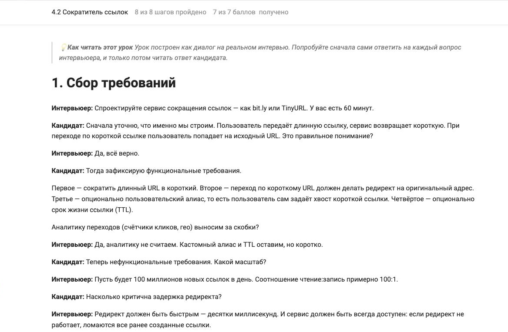
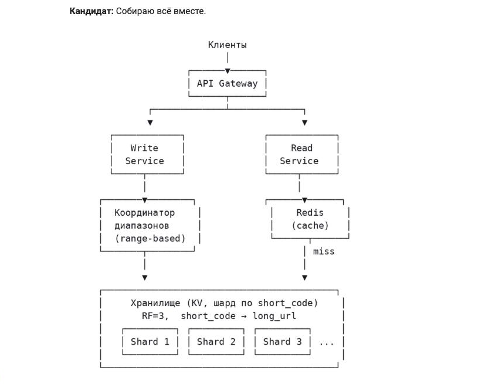

Не провали интервью: System Design с нуля до оффера
Онлайн-курс от Григория Григоревского — техлида Lamoda с опытом в Сбере, Самокате, Positive Technologies и Яндекс Практикуме. Научись проектировать системы и уверенно проходить System Design-интервью.
- Программа из задач и вопросов с собеседований
- Тренажёр для задач с лайв-кодинга и теории
- Бесплатный урок, чтобы попробовать
- Курс можно проходить в удобном темпе
- Telegram — отвечу на вопросы всем ученикам
- Возврат по правилам Stepik в течение месяца после покупки
Что я предлагаю
Пройдите курс по System Design. А сложные вопросы, например: карьера, скрининг сильных и слабых сторон, мок-интервью — закрепите со мной на созвоне.
Учить теорию с ментором на онлайн-созвонах долго и дорого. Курс освещает вопросы для подготовки к собеседованию и даёт возможность потренироваться на тестовых заданиях. Вы получаете разбор вопросов и задач и тренажёр за цену меньше, чем часовой созвон с ментором! Для тех, кто проходит курс, я бесплатно отвечу на вопросы в телеграме и подскажу, какую тему проработать.
Если помимо System Design вам предстоит секция лайв-кодинга, я также предлагаю курс для подготовки по Golang.
Что внутри курса
11 уроков и 87 задач и тестов с автопроверкой. Не набор схем для заучивания, а фреймворк, с которым можно подойти к любой незнакомой System Design-задаче.
Отобранный материал
Не нужно проматывать часовые видео на YouTube и прыгать между статьями на Хабре. Темы, вопросы и задачи собраны из реальных собеседований и объяснены на понятных аналогиях.
Разбор систем с нуля
Проектируем реальные системы по шагам: требования → нагрузка → API → модель данных → компоненты → отказоустойчивость → trade-offs. Тот же порядок работает и на интервью.
Квиз после каждого урока
Короткая проверка в конце урока: сразу видно, усвоен материал или тему стоит перечитать. Ошибки разбираются, а не просто засчитываются.
Доступ навсегда
Проходить можно в своём темпе и возвращаться к материалу перед каждым следующим собеседованием — доступ не сгорает.

Урок как диалог на интервью
Вопрос интервьюера → ваш вариант ответа → разбор. Ровно тот формат, в котором придётся отвечать.

Архитектура собирается по шагам
От требований и нагрузки до финальной схемы: видно, откуда взялся каждый компонент.
Скриншоты из курса на Stepik.
Бесплатно
Не готов покупать курс? Начни с бесплатного материала
Получи первое представление о System Design через бесплатный урок «Сократитель ссылок».
На странице курса нажмите «Бесплатный урок» — он открыт целиком, оплата не нужна. Понадобится только бесплатный аккаунт Stepik.
Как получить доступ
Курс живёт на платформе Stepik. Весь путь занимает пару минут.
Открываете курс на Stepik
По любой кнопке с этой страницы — она ведёт прямо на страницу курса.
Заводите аккаунт
Регистрация бесплатная: через Google, VK или почту. Аккаунт нужен, чтобы сохранялся прогресс и результаты задач.
Оплачиваете курс
Оплата проходит на стороне Stepik. Доступ открывается сразу после оплаты — ждать ничего не нужно.
Проходите в своём темпе
Дедлайнов и расписания нет, доступ к курсу остаётся навсегда.
Курс не подошёл — можно вернуть деньги
Оплата проходит на Stepik, поэтому и возврат работает по правилам платформы: запросить его можно в течение месяца после покупки через поддержку Stepik.
Кому подойдет обучение
Курс и менторство для разработчиков, которые уже знают основы программирования, API, баз данных и клиент-серверного взаимодействия, но хотят увереннее проходить технические интервью и лучше понимать архитектуру систем.
Junior → Middle
Если ты готовишься к переходу на middle-позицию, обучение поможет структурировать знания, лучше отвечать на технические вопросы и увереннее объяснять свои решения на собеседованиях.
Middle-разработчикам
Если ты уже работаешь в команде, но теряешься на архитектурных вопросах, курс даст понятный фреймворк: как собирать требования, выбирать компоненты, считать нагрузку и объяснять trade-offs.
Senior разработчикам
Если ты хочешь расти дальше и проходить более сложные интервью, менторство поможет точечно разобрать пробелы, резюме, карьерную стратегию и подготовку к собеседованиям.
Программа курса
Курс «Не провали интервью: System Design с нуля до оффера» — без воды и на наглядных примерах: от основ и компонентов систем до баз данных, кэширования, API, брокеров сообщений и проектирования реальных систем с нуля.
Готовишься к собеседованиям, но System Design все еще кажется хаосом?
Многие разработчики учат отдельные технологии, смотрят разборы на YouTube и читают статьи, но на интервью все равно теряются, когда нужно спроектировать систему целиком.
01
Знаешь технологии отдельно
Ты слышал про Redis, Kafka, PostgreSQL, микросервисы и кеширование, но не всегда понимаешь, когда и зачем выбирать конкретный инструмент.
02
Теряешься в начале задачи
На System Design-вопросе сложно понять, с чего начать: рисовать сервисы, спрашивать требования, считать нагрузку или выбирать базу данных.
03
Не хватает структуры ответа
Ты можешь знать правильные слова, но ответ получается несобранным: без логики, последовательности и понятных аргументов.
04
Сложно объяснять решения
На интервью важно не просто назвать Kafka, Redis или NoSQL, а объяснить, почему именно это решение подходит под ограничения задачи.
05
Есть страх технических интервью
Даже с опытом разработки на собеседовании можно растеряться из-за уточняющих вопросов, давления по времени и неожиданных сценариев.
06
Непонятно, как расти дальше
Хочется перейти на следующий уровень и повысить доход, но нет понятного плана: какие темы закрывать, как улучшить резюме и как готовиться.
Проблема не в том, что информации мало. Проблема в том, что ее слишком много, а понятного фреймворка подготовки нет.
System Design — это не заучивание схем, а способ инженерно думать
System Design — навык рассуждать о системе: понимать требования, оценивать нагрузку, выбирать компоненты, видеть ограничения и объяснять trade-offs.
Ты не просто запомнишь несколько схем. Ты получишь структуру, с которой сможешь подходить к новым System Design-задачам осознанно и спокойно.
- 1
Понять контекст и требования задачи
- 2
Выделить функциональные и нефункциональные требования
- 3
Оценить нагрузку: RPS, storage и ограничения
- 4
Спроектировать API и модель данных
- 5
Выбрать базу данных, кеш, очередь и другие компоненты
- 6
Продумать отказоустойчивость: retries, timeouts, DLQ, consistency
- 7
Собрать ответ в понятную историю для интервьюера
Что изменится после курса
У тебя появится понятная структура подготовки к System Design и техническим собеседованиям.
Поймешь, как начинать System Design-задачу
Ты перестанешь начинать с хаотичного рисования сервисов и научишься сначала собирать требования, ограничения и контекст.
Научишься говорить языком архитектуры
Сможешь объяснять, почему выбираешь SQL или NoSQL, кеш или очередь, синхронное или асинхронное взаимодействие.
Разберешь ключевые компоненты систем
Поймешь, как работают API, базы данных, кеши, очереди, балансировщики, репликация, шардирование и отказоустойчивость.
Сможешь структурировать ответ на интервью
Получишь фреймворк ответа: требования → нагрузка → API → данные → компоненты → отказы → trade-offs → финальное решение.
Будешь увереннее на технических интервью
Подготовка станет не хаотичной, а системной: ты поймешь, какие темы закрывать и как объяснять свои решения.
Получишь карьерный фокус
Через менторство можно дополнительно разобрать резюме, цели, слабые места, стратегию собеседований и следующий карьерный шаг.
Менторство, если нужна персональная подготовка
Курс дает систему. Менторство помогает применить ее к твоей конкретной ситуации: уровню, резюме, целям, собеседованиям и карьерному треку.
Что разберем на менторстве
- →Текущий уровень и пробелы
- →Темы, которые подтянуть перед интервью
- →Как улучшить резюме
- →Подготовка к техническому скринингу
- →Ответы на System Design-вопросы
- →Как объяснять проекты из опыта
- →Выбор компаний и вакансий
- →Карьерный план
- →Переход на следующий уровень
- →Аргументация зарплатных ожиданий
Кому подойдет
- ✓Скоро собеседование
- ✓Уже были отказы, и непонятно, почему
- ✓Сложно описать опыт в резюме
- ✓Хочешь перейти с junior на middle
- ✓Хочешь вырасти с middle до middle+
- ✓Нужна обратная связь по конкретным ответам
- ✓Хочется двигаться по персональному плану

Григорий Григоревский
техлид Lamoda
Кто ведет курс и менторство
Курс и менторство ведет Григорий Григоревский — техлид Lamoda с опытом в Сбере, Самокате, Positive Technologies и Яндекс Практикуме.
В обучении фокус не на абстрактной теории, а на практическом подходе: как думать на интервью, как объяснять решения, как видеть систему целиком и как готовиться к следующему карьерному шагу.
Типичные ошибки на System Design-собеседованиях
ошибка №1
Сразу рисовать сервисы
Без требований и ограничений схема быстро превращается в набор случайных блоков.
ошибка №2
Называть технологии без объяснения
Kafka, Redis, PostgreSQL или микросервисы сами по себе не делают ответ сильным. Важно объяснить, почему они нужны именно в этой задаче.
ошибка №3
Не считать нагрузку
Без RPS, storage, throughput и read / write ratio сложно аргументировать масштаб системы.
ошибка №4
Забывать про отказы
На интервью важно думать про timeouts, retries, DLQ, idempotency, consistency и partial failures.
ошибка №5
Уходить слишком глубоко в код
System Design — это архитектурный уровень. Нужно уметь держать баланс между деталями и общей картиной.
ошибка №6
Не завершать ответ
Даже хорошее рассуждение может выглядеть слабым, если кандидат не умеет собрать его в финальное решение и объяснить trade-offs.
Частые вопросы
Можно посмотреть материал до покупки?
Да. Урок «Сократитель ссылок» открыт целиком и бесплатно: откройте страницу курса на Stepik и нажмите «Бесплатный урок». По нему видно и подачу материала, и как устроен разбор задач.
Нужен ли опыт и знание конкретного языка?
Язык не важен: курс про архитектуру, а не про синтаксис. Нужны базовые представления о том, как устроены API, базы данных и клиент-серверное взаимодействие — примерно уровень уверенного junior+.
Сколько времени займёт курс?
Столько, сколько вам нужно: жёсткого расписания и дедлайнов нет, доступ остаётся навсегда. Кто-то проходит курс за неделю перед собеседованием, кто-то возвращается к отдельным темам точечно.
Как оплатить и что будет после оплаты?
Оплата проходит на стороне Stepik — там же, где живёт курс. Доступ открывается сразу после оплаты и остаётся навсегда.
А если курс мне не подойдёт?
Оплата проходит на Stepik, поэтому и возврат работает по правилам платформы: запросить его можно в течение месяца после покупки через поддержку Stepik.
Чем это лучше бесплатных статей и видео?
Проблема не в том, что информации мало, а в том, что её слишком много и нет структуры. Курс даёт фреймворк ответа и разбирает типичные ошибки, за которые заваливают секцию. И на любой вопрос по курсу я отвечаю лично.
Можно задать вопрос автору?
Да. Всем, кто проходит курс, я бесплатно отвечаю в Telegram — разберу непонятный момент и подскажу, какую тему стоит проработать.
Чем курс отличается от менторства?
Курс даёт систему: фреймворк, компоненты и практику. Менторство — это уже про вашу конкретную ситуацию: резюме, пробелы, стратегия собеседований и карьерный план.
Оставить заявку на менторство
Расскажи коротко о своем опыте, целях и ближайших задачах — я отвечу и предложу формат работы.
Индивидуальные онлайн-уроки
от 4 500 ₽ за урок
Персональная программа: Golang, System Design, резюме, стратегия собеседований, карьерный план.
Не любите формы? Напишите мне напрямую: Telegram @bigzhuk